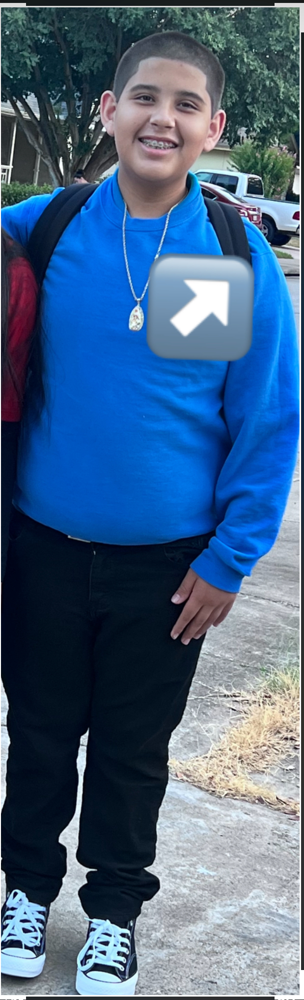

Meet Carlos Sr., “Chato.”
He’s the reason Carlos Jr. became our “Chatito.”
They shared more than just a name—they were truly
best friends. Their bond was something so special,
and I’ll forever cherish the love they shared.

This is Chatito’s mom, Sandy.
Chatito and I were inseparable. He was my baby boy,
my shadow, and one of the greatest loves of my life.
There will never be a day I don’t miss him.

This is Kimmie, Chatito’s big sister.
He loved her more than words could ever explain.
This was their last Halloween together. Chatito was
always protective of Kimmie and would stand up for her
against anyone. She was his sister, his person, and
someone he loved deeply.

Chatito loved being goofy.
That was just who he was. He loved making people laugh,
being silly, and bringing fun wherever he went.
His personality could fill a room.

Family time was everything.
One of the things we loved doing together was spending
time at lakes and rivers. Some of our simplest family
days became memories I now hold onto so tightly.

Chatito had a contagious smile.
He could make you smile without even trying.
That smile was one of the things everyone who knew
him will remember forever.

He loved his sweaters, hoodies, and jackets.
It could be hot outside and somehow Chatito would
still find a reason to wear one. It was just another
little thing that made him, him.

Chatito loved making his own money.
He would wash our cars for a few dollars because
he loved earning his own money and doing things
for himself. And, of course, he did it with that
big smile of his.

He knew he was handsome.
And honestly, he wasn’t wrong. Chatito had a
confidence and personality all his own. He knew
how to make sure everyone else knew just how
handsome he thought he was.

We’ll forever miss that beautiful smile.
It’s a smile I wish I could see just one more time,
hear his laugh just one more time, and hold my baby
boy just one more time.

Such an innocent boy.
Chatito had the most beautiful smile, and none of us
could have imagined how much pain he was carrying
behind it. Looking back at these pictures reminds me
that sometimes the biggest smiles can hide the deepest pain.

Chatito had a Big Brother through the Big Brothers Big Sisters program in Austin, Texas.
His Big Brother taught him how to play Monopoly,
and Chatito loved spending that time with him.
It became one of those simple memories that means
so much more now.